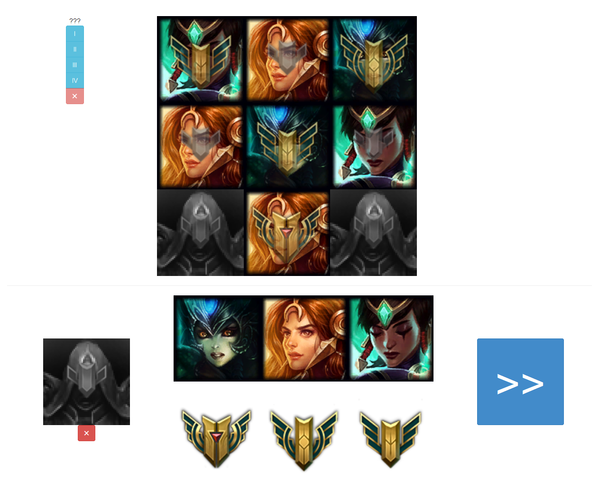
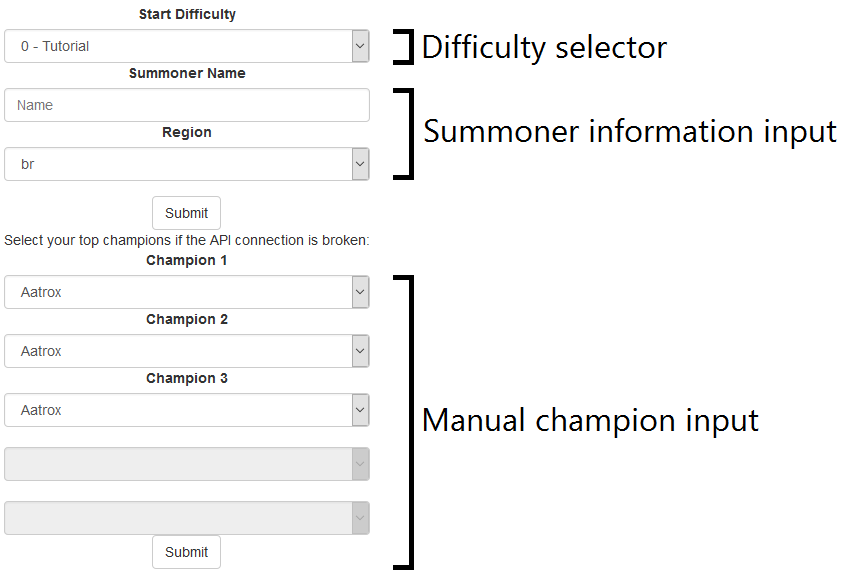
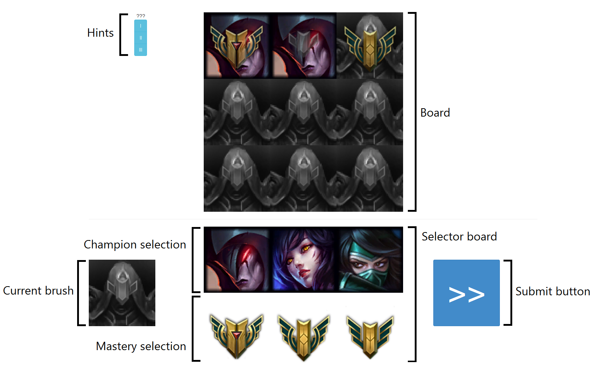
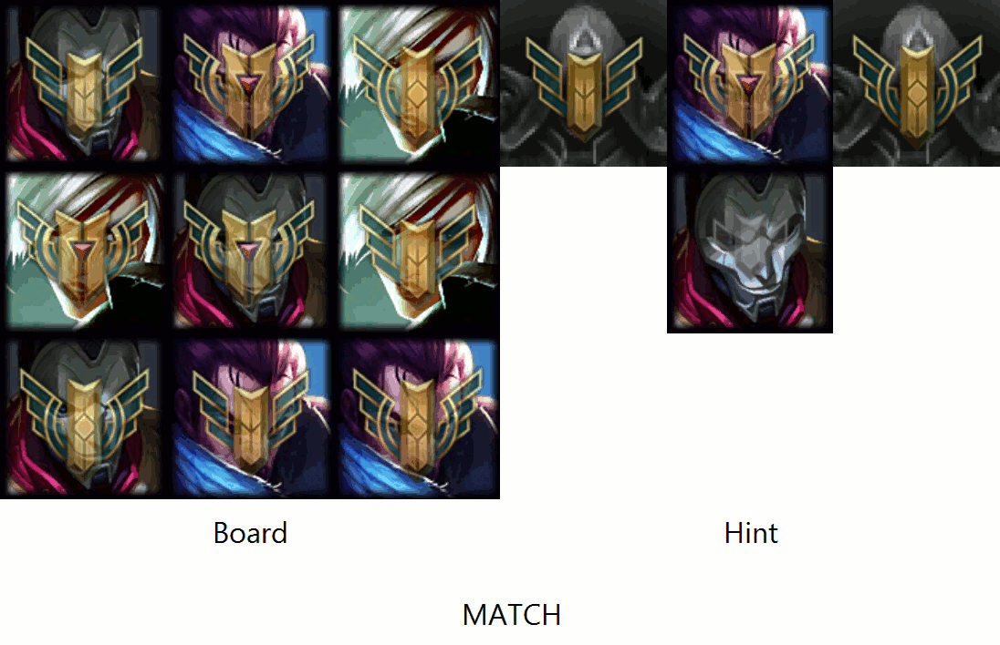
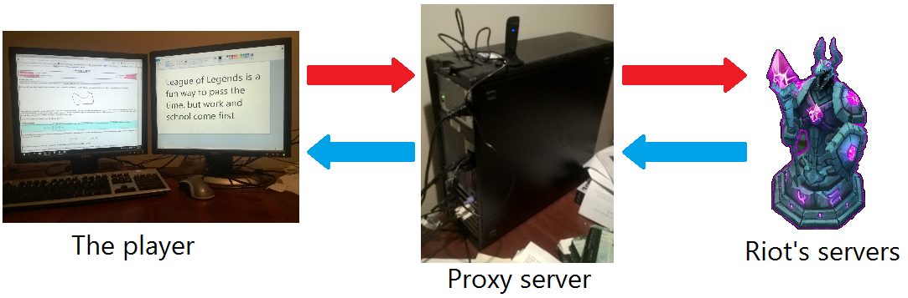

If you've played this game already (you probably have; winning gives you a link here) you may or may not have noticed that "Masteromino" is similar to another game known as Mysterious Negg Cave. (You need a Neopets account to play.) I swear that I didn't completely rip the concept from Mysterious Negg Cave; I did a similar puzzle when I was in third grade, but trying to figure out the name of the original puzzle just led me to Neopets.
The concept is somewhat straightforwards. The player is given a 3x3 board that has to be filled by unique champion/mastery pairs. The final layout of the board should contain all the hints, which are in the shape of a polyomino. In a way you can think of this game as "advanced tetris", to an extent.
Playing this game with pencil and paper is very easy, but constantly designing new puzzles and solutions gets somewhat repetative and even downright boring at times. Wouldn't it be nice if you could solve ten of them in a single sitting? (And without logging in and feeling the guilt of leaving your Neopet for the last six years, you sick monster.)
Partially completed puzzle
The majority game code is stored in the files index.html and gameEngine.js. The folder assets holds all the images utilized in the game; they are images of the brawlers and a formatting helper, respectively. Although the names of the files may seem to be some sort of arcane computer science buzzword, they can be boiled down to "any file ending with .html is a webpage, any file ending with .js holds code, and a folder holds other files." During the last API contest in August 2015, I included documentation that was code-heavy. I feel as though this obscured many of the concepts I used to build that last project, so this documentation will focus more heavily on the conceptual side of the project rather than the code side.
Finally, when designing the game layout, I wanted to mark everything such that no words outside the tutorial were used. For example, instead labelling "submit" on the submit button, I used a "<<" mark instead.
Throwing code everywhere is known as a "special organization scheme" for the programmer and "a huge mess" for everyone else. However, shoving all the necessary code to run a program in a single file can also lead to an organization fiasco: they should be partitioned in some way. In this project, I decided that the index.html should contain the GUI holders, gameEngine.js should contain the code that runs the programs, and that assets holds all non-code items such as images.
There are two "screens" in this application: the input menu and the game itself. I suppose we look at the first screen first:
Diagram of the input menu
We can divide the first screen into two more parts: The top and bottom. The top part contains the difficulty options, a textfield to input the player's summoner name, a dropdown selector to choose the player's region, and a "submit" button that ties it together. This top section is linked to an API call. In other words, submitting the player's summoner name and region will make the game pull three champions from his or her top mastered champs list.
The bottom half is for manual champion mastery entry, and does not contact the API at all. This was set up as a fall back in case a summoner did not have enough champions mastered or in case the API calls fail. It consists of three usable dropdown selectors and a second submit button.
Finally, a loading section is displayed when the player presses a submit button, and it is re-hidden when the game finishes loading.
The game interface is more complicated than the input menu:
Diagram of the game interface
The game interface is also divided into a "top" section and a "bottom" section. The division is marked with a horizontal line that divides the board and the brush.
The top section contains two items: the hints button array and the board. Clicking on a hint button draws a hint on the board, and clicking on the board again changes it back into "paint mode" instead of "hint mode". In this sense the hint buttons basically override the actual board temporarily in order to display their information.
The construction of the board itself is more complex. Looking closely, the board is not one nor nine images, but eighteen images neatly organized in a 3-by-3 grid. The mastery images have transparency data so they can be laid on top of the champion portraits without completely obscuring them. When the player can edit the board ("paint mode"), each image is coded as a button that copies the current brush data to the tile that was clicked. When the player is viewing the hints ("hint mode"), the image is still coded as a button, but clicking on it will simply revert the board back into paint mode.
Although the bottom section contains more items, the implementation is surprisingly simple. Clicking on a portrait from the champion selection item changes the current brush to the corresponding value, and a similar action occurs for the mastery medals. Clicking on the current brush icon resets it to the default value. The submit button, when clicked, triggers a check of the paint mode board. If the board satisfies every hint, then the game declares the puzzle solved.
Initializing the game is the setup. It means declaring variables and functions, making an API call and drawing the items the player needs onto the interface. Think of it as the computer equivalent of dealing a deck of cards and making room for snacks.
Although I did mention that I did not want to hang a spotlight over the code, I feel that breaking down the individual components of the game greatly clarifies exactly how the game is run behind the scenes.
The names of the variables are self explanatory, but I will elaborate anyways:
| Variable Name | Description |
|---|---|
| imported | Determines whether the puzzle was imported or generated |
| boardSize | Defines the side length of the board |
| board | Holds data for the board in paint mode |
| champs | Holds data for the three champions chosen to participate in the game |
| hints | Holds data for the hints on the left side of the screen |
| currentDifficulty | Affects several settings that increases or decreases difficulty |
| currentBrush | Holds data for the current brush |
| win | Determines whether the game has been won or not |
| windowWidth | Gets the width of the screen, in pixels |
| imageWidth | Defines the size of an image, in pixels |
| masteryOpacity | Defines the opacity for the mastery medals. 1 = completely opaque. 0 = completely transparent. |
| boardHtml | Organizes the output for the board |
| infoHtml | Organizes the output for the selector board |
| cbHtml | Organizes the output for the current brush |
| hintsHtml | Organizes the output for hints |
Note for anyone browsing the Github repo: hints and currentDifficulty are not their actual names, which are polyominos and curDifficulty respectively. They have been renamed here to make their function clearer.
An astute reader may notice that out of all the variables listed, the values of boardSize and masteryOpacity do not depend on anything variable nor change. Why do I take an extra step to create a special variable specifically for them? It's important to never disregard the habits of a veteran. The reason for using constants is to eliminate the use of magic numbers. The Wikipedia article explains the issue well, but the general gist of it is that using a constant instead of a hard value means that the code is both more human-readable and easily changable. When I was originally coding the game, the board was 5-by-5. Imagine how annoying it would be to replace every "3" with a "5"!
Several other astute readers may now point out the reason I used a magic number when defining imageWidth. Firstly, I wanted the board to have margins on both the left and right side of the screen, as I felt that it made the game look pretty. Secondly, I hand-picked a two-image margin on both sides, which, after a simple calculation, means that I need to divide the image by the board width plus four more image widths. Thirdly, I felt that defining two extra variables to make a simple calculation obscured the reason I was making the calculations to begin with. And lastly, the ambiguity that the 4 may introduce can be alleviated by a comment.
~~
After the variables are declared, the puzzle is generated (assuming that imported is false) and the game is set up. The process is simple:
The first step has a simple implementation. A list containing all champion/mastery combinations is generated, then the values in the list are randomly assigned to a 3-by-3 coordinate grid. This way, we can easily remove the possibility of a duplicate tile, which would otherwise cause an invalid board.
Let's go through an example setup. Initially, we generate the list:
Wait, why are we starting at 0? Shouldn't we go from 1 to 3 instead of 0 to 2? It's because array indices start at 0 so iterating through a list of length N means the programmer goes from 0 to N rather than 1 to (N+1). The champions in champs correspond with the indices 0 1 2, and so their ID is used like so. Mastery medals are not stored in an array and do not need to be, but their indices are 0 1 2 as well for consistency.
Anyways, after we generate the list of combinations, we place each item into the board using a simple process:
Next, we generate the hints. This part was the most fun to program.
Firstly, however, I have to define some notation so that the explanation is not too confusing.
| Mark | Description | Example |
|---|---|---|
| ij | The ith champion with the jth mastery. | "12" means "Shaco, mastery 3" |
| iX | The ith champion with no mastery. | "1X" means "Shaco, no mastery" |
| Xj | No champion but the jth mastery is given | "X2" means "No champion, mastery 3" |
| XX | Both champion and mastery data is not given. | "XX" means "No champion, no mastery" |
| -- | The tile does not exist. | -- means a blank tile. |
Generation of hints is as follows:
I soon found out that while generating hints is easy, generating good hints is difficult.
A significant problem I ran across was that hints overlapped too much. In other words, a small hint could be included in a large hint, effectively making the smaller hint useless. To combat this, I considered making sure that every single tile was selected at least once, but the best and most difficult puzzles are solved through process of elimination. Using that implementation would destroy any possibility of that perfect puzzle dream. Instead, I decided to check to see if a generated hint was useless or made another hint useless. If it did, I threw that polyomino out. In order to optimize the process, I also discouraged the hint generator to use tiles that were already used before. Now, the generator only throws out fifteen or so polyominos instead of fifty.
The issue of the hint size and the number of hints also threatened to disrupt the difficulty level of a puzzle. If a puzzle had too few hints that were too small, the puzzle could hold up to ten or more different solutions. If a puzzle had too many hints that were too large, the puzzle became mindlessly easy. Eventually, after writing down a list of favorable and unfavorable combinations, I came to the constrant (Sum of the squares of the size of the hints) < (boardSize)4. Although it is an arbitrary limit, I feel that it is sufficient.
Fun fact: There are twenty functions in Masteromino with an average length of roughly 40 lines of code. Generating hints takes almost 250.
~~
Third and lastly, the board, current brush, selector board, submit button, and hints buttons are drawn on the screen. Outside of using a handful of CSS tricks, this last step is sadly not as impressive as the other two, and there is not much to talk about.
As you may have guessed already, I love making lists to organize my thoughts, such as how this game would be run through code. The game processes can be broken down into several individual components:
The board display is controlled by the user when painting a guess (this will be referred to as "paint mode") and by the hints when the player is viewing the hints (this will be referred to as "hint mode"). There is actually not a variable that keeps track of the current mode of the board. Instead, careful setup ensures that when in paint mode, there is an option to go to hint mode at any time, and when in hint mode, there is an option to go into paint mode at any time.
When in paint mode, clicking on a tile changes the clicked tile to the current brush. To go from paint mode to hint mode, the player clicks on one of the blue buttons on the left side of the screen. When in hint mode, clicking on the board reverts the board back into paint mode.
Hints are static data; once generated they do not change. Clicking on a hint button basically overrides the board with the hint data.
The brush selectors are large buttons that edit the brush. The brush is basically the setting the player chooses when painting the board.
Validation of the board is one of those things that's simple on paper, but complex in code. On paper, the player simply looks at the board and see whether or not a hint matches at a single glance. In code, the board is assumed to be validated unless proof is presented otherwise. Every hint has to overlay itself on top of the board in every possible position until it can find itself on the board. If the polyomino cannot find itself, then the board is invalidated.
Visual demonstration of the validation process.
Because nearly every button or image click triggers a function, it is somewhat easy to track the player's progression throughout the game. Knowing such details such as the player's mouse position is unnecessary, however, so the player is only tracked during the tutorial.
Nearly every developer who works with League of Legends data is granted an API key associated with their account. The API key allows them to use the Riot API, and Riot can track every developer's API usage. Because the API key is tied to each account, it's important that the key is secure. Because of this, directly embedding a key in a distributed client application (such as a webpage) is careless. The average Joe can right click, "Inspect Element" on the page and easily grab the key.
To combat this, I set up a Nodejs server to handle all API requests to act as a proxy between the player and Riot.
Diagram of how API requests are trafficked.
The red arrows indicate an incoming request, while the blue arrows indicate an outgoing request.
Making API requests relies on two plugins to function: express, the easiest, if not one of the easiest, framework to set up and use, and limiter, a simple rate limiter.
The server hosting site I use is Heroku, a cloud platform that boasts its easy and detailed setup for applications.
Because of my inexperience with networking, the server was definitely the most difficult part of this project. I constantly ran into Cross-Origin-Resource-Sharing (CORS) errors, timeout crashes, badly formatted inputs creating a server crash, permission issues, 444 No Response errors, and other frustrations. Every issue needed its individual solution: CORS required an AJAX call using a special varient of JSON known as JSONP. (AJAX is a script method to communicate with server-side code, and JSON is a standard for formatting data.) It was originally set up with a CORS header that allowed all sources to be accepted, but Firefox didn't like that and threw an error anyways. The timeout errors usually meant faulty callback structures, and I was forced to rebuild the request structures several times as other solutions sometimes broke my timeout solution. I could go on and on about this.
But at the end of the day, it's important that you try learn something new every day. This project was extremely fun to build, and even the most frustrating aspects of this could never overcome the euphoric feeling of seeing everything run clean as a whistle. I learned a lot about AJAX functions and server hosting coding this, as well as extra experience in pinpointing the weirdest and most frustrating bugs and errors.
League of Legends is a fun, engaging, and resourceful way to pass the time, but work and school come first. I truly wish I could polish this into something big and beautiful, but I'm a really lazy person I have exams to study for.
A more technical explanation can be found here